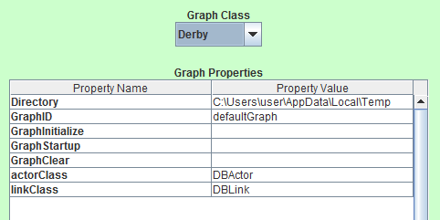

Derby
This is the Java database graph. All commands store results into a Derby Database. It has
several parameters:

- Directory: Location to find the database
- GraphID: Name of the root graph and the name of the database.
- GraphInitialize: Should the tables be created for Graph-RAT use.
- GraphStartup: Should the database be opened or not.
- GraphClear: Should all prexisting data be removed or not.
- ActorClass: Should a different class be used for Actors - not recommended.
- LinkClass: Should a different class be used for Links - not recommended.